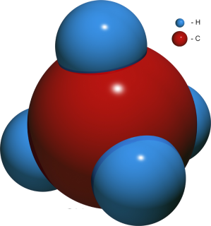

Assume $\vec{a} \neq \vec{0}$. Which of the following, if any, are true statements?
If \(\vec{a} \cdot \vec{b} = \vec{a} \cdot \vec{c}\) then \(\vec{b} = \vec{c}\).
If \(\vec{a} \times \vec{b} = \vec{a} \times \vec{c}\) then \(\vec{b} = \vec{c}\).
If \(\vec{a} \cdot \vec{b} = \vec{a} \cdot \vec{c}\) and \(\vec{a} \times \vec{b} = \vec{a} \times \vec{c}\) then \(\vec{b} = \vec{c}\).
Example 1 - Areas of triangles
A somewhat common problem in computer graphics is to calculate the area of a triangle in 3D space using only its coordinates. This problem also arises in surface strain calculations in mechanics.
Above is an image of the famous Stanford bunny. This is a standard test case for many discrete geometry and computer graphics algorithms.
Can you use the cross product to calculate the area of the triangle with corners \((0,0,0), (1,0,1), (3,-1,2)\)?
Example 2 - PiP
Can you determine if the point \(p = (1,1,0)\) is in the triangle with corners \((2,2,0), (-1,0,0), (3,0,0)\)?
First find vectors \(v_1, v_2, v_3\) that point from \(p\) to each corner.
Calculate the winding number and determine if the point is inside the triangle.
Example 3 - Methane Molecule

Methane, \(CH_4\), is a molecule with one carbon and four hydrogen atoms. Assume the hydrogen atoms are located at the corners of a regular tetrahedron with coordinates (0,0,0), (1,0,1), (0,1,1), and (1,1,0).
The carbon atom is at the centroid of this tetrahedron at (1/2, 1/2, 1/2). The bond angle for the molecule is the angle between the line segments joining the carbon atom to two of the hydrogen atoms.
Show this angle is approximately 109.5\(^o\).
Example 4 - Protons in a magnetic field
The force \(\vec{F}\) acting on a charge \(q\) moving with velocity \(\vec{v}\) in a magnetic field \(\vec{B}\) is given by
$$\vec{F} = q \vec{v} \times \vec{B},$$
where \(q\) is measured in coulombs, \(|\vec{B}|\) is tesla, and \(|\vec{v}|\) in meters per second. This is magnetic term of the Lorentz Force.
Suppose that a proton beam moves through a region in space where there is a uniform magnetic field \(\vec{B} = 2 \hat{z}\).
The protons have velocity
$$\vec{v} = 1.5 10^5 \hat{x} + \frac{3\sqrt{3}}{2} 10^5 \hat{z}.$$
Find the force on a proton if its charge is \(q = 1.6 10^{-19}\) C.